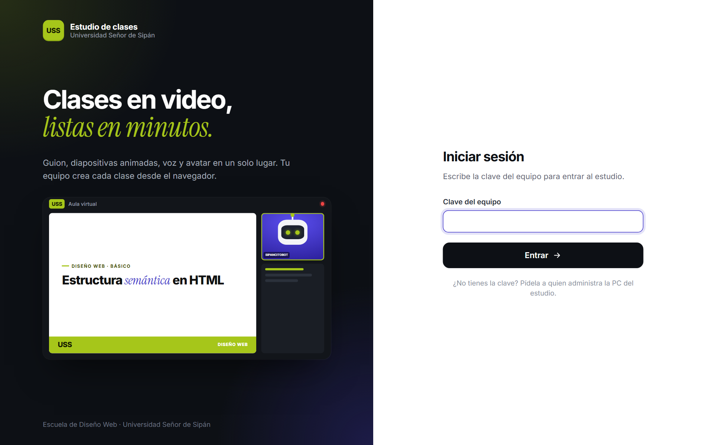
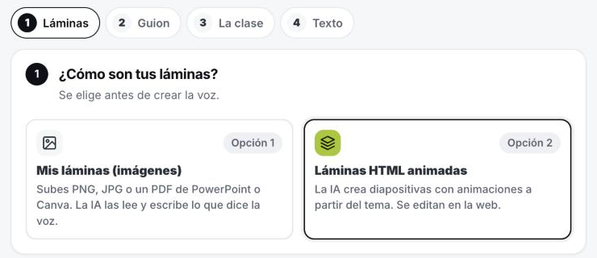
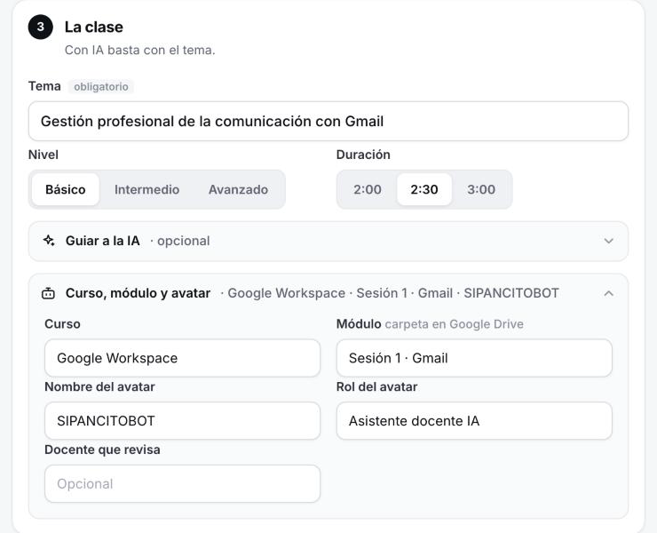
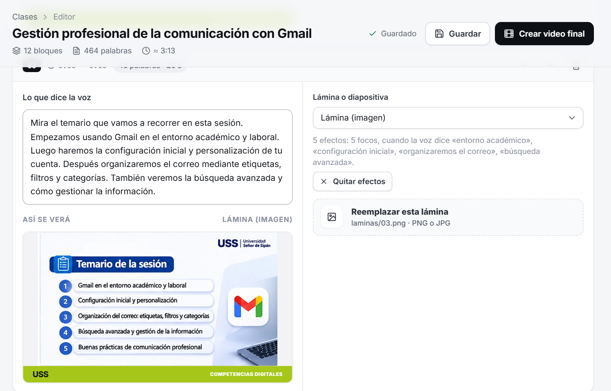
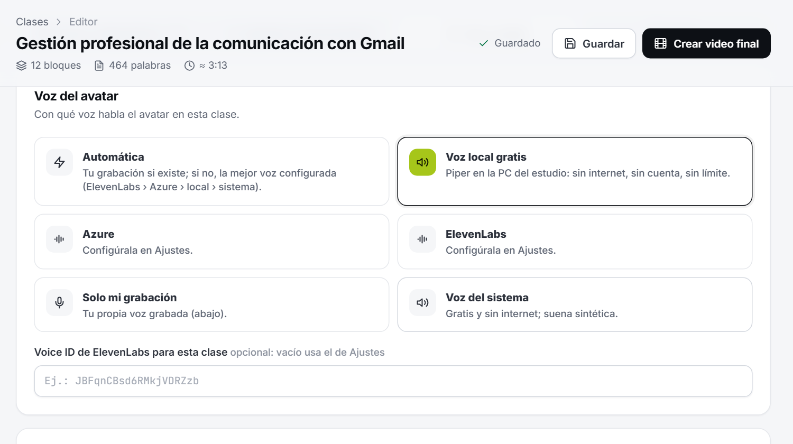
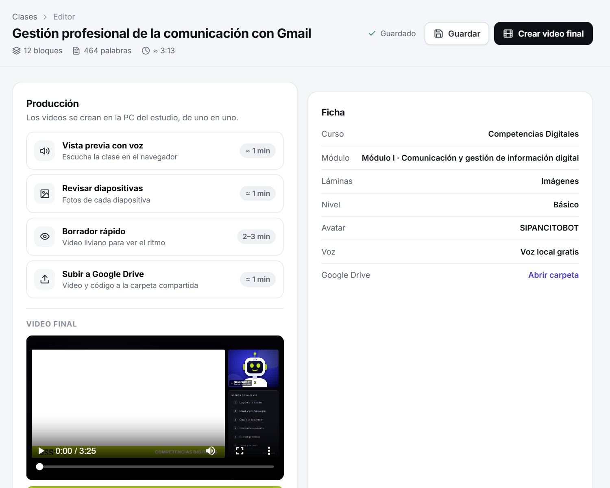

Desde el navegador de tu PC, sin instalar nada. Te toma unos 15 minutos; el resto lo hace la PC del estudio.
Funciona desde cualquier PC conectada a la red de la universidad, en Chrome o Edge.
Abre la dirección en el navegador, escribe la clave del equipo y pulsa Entrar.




En la pestaña Voz y avatar deja Voz local gratis. Luego pulsa Vista previa con voz y, cuando esté lista, Abrir vista previa con sonido.

Pulsa Crear video final (arriba a la derecha). Puedes cerrar la pestaña: el video se crea en la PC del estudio y se guarda solo en Google Drive, junto con la clase en HTML (se abre con doble clic y se ve con voz).

En la carpeta compartida del equipo en Google Drive: